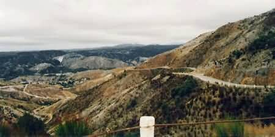
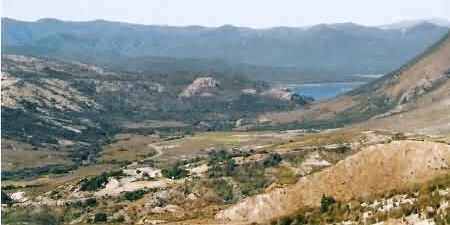
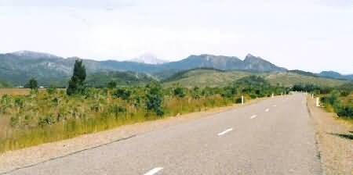
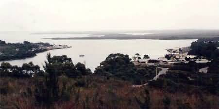
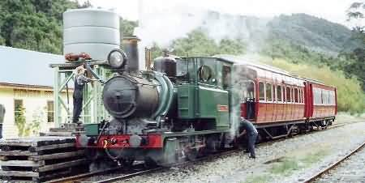
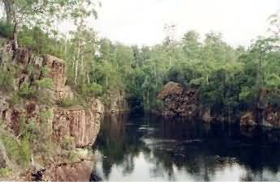
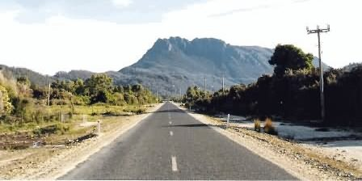

NAVIGATION
TOP of Page
MAIN Page
HOME Page
PREV Page
NEXT Page
WEST COAST
Linda to Lake Margrt
Lake Margrt to Zeehan
Zeehan to Tullah
TASMANIAN TOUR
North West
Central North
North East
East Coast
South East
South West
Highlands
West Coast
North Coast
|
From Linda to Lake Margaret
Linda is a ghost town closed after WW1 when the mine workers were rehoused
in Gormanston. What appears as a track beside the huge derelict Royal Hotel
is actually part of the roadbed of the North Mt Lyell railway around the eastern
side of Mt Lyell. Call home from the public phone box across the road. Gormanston
was created as a residential town for the mines along the Linda Valley.

The Mount Lyell Highway descending into Queenstown
Mount Lyell was the birthplace in the 1880's of the competing Mt Lyell
and North Mt Lyell mining companies. Turn right at Gormanston for the water
filled Iron Blow open cut mine. The highway twists down the side of the
mountain with a moonscape appearance. The ecological disaster is due to the trees
being cut down to feed the smelters, with the sulphur fumes from the smelters killing
everything else and colouring the denuded rocks. Rain has then leached the thin topsoil.
The locals consider the sight to be a tourist attraction, and are promoting keeping the
hills bare.
TOP
MAIN
HOME
PREV
NEXT

View from Mt Lyell towards Lake Burbury
Queenstown, population 3,500, is the main mining centre on the West Coast.
West Lyell Mine, 1km below the original open cut, produces 1.78 million tonnes
of 1.5% copper ore per annum. The Mt Lyell Mine Offices, near the mine tailings,
has a video display and a small museum. Look for the underground loco and a limited
tour of the mine facilities. Miners Siding in the park at the entrance to town
has an ex Mt Lyell underground electric locomotive. The newly restored Wilderness
Railway features restored Mt Lyell Railway Locos and re-creation carriages. It is
based in Queenstown at the old station building and has daily trips down the Mt Lyell
track to Strahan.
Soak up history at the Photographic Museum in the old brick Imperial hotel across
the road. Lyell Tours, offers tours from the tourist office to the top of Mt Lyell
with spectacular views over the area and the mining facilities such as the 43m headframe.
A combined half day Crotty and Mine tour is $16.50. The Empire Hotel (phone (03)
6471-1699, fax (03)6471-1788) with its impressive blackwood staircase has bed and breakfast.
Drive though South Queenstown for a tour along the scenic Mount Jukes Road to
Lake Burbury with Crotty Dam to the North and Darwin Dam to the South.
TOP
MAIN
HOME
PREV
NEXT
From Lake Margaret to Zeehan
The distance is approx 220km on the Lyell highway and the tarred coast road. Head
North for 3km and do a detour to Lake Margaret. Return to the highway and turn right
then immediately left at the intersection to head towards Strahan past the airport.
Lake Margaret, an 8 km detour up a scenic winding road, is a quaint hamlet of
five houses and the small Hydro-Electric Power Station (1911) serving Queenstown.
Ring the doorbell and ask nicely; you may get a short tour if the workers aren't too
busy. The pipeline from the lake is wood staved, and serviced by a crawling platform.
You can walk 2.1km to the headstock for beautiful views.

The Scenic Queenstown to Strahan Road
Strahan, population 450, is a timber town and the only port on the west coast.
The port used to handle the copper from Queenstown. Along the waterfront are the Post
Office and old Steamship offices plus a host of trendy restaurants. The caravan park
stay cost $2.00. Macquarie Harbour is a picturesque body of water with Gordon
River cruises departing twice daily from the wharf into the blustery exposure of the
harbour. Drive along the Macquarie Heads road and take a look at the dangerous Hells
Gates entrance. Sarah Island (1821) was a harsh prison for incorrigible
prisoners. Huon pines were felled for shipbuilding and epair by convict gangs. Refer
to the book For the Term of his Natural Life by Marcus Clark for vivid details.
Highwayman Matthew Brady was one of the 112 prisoners to escape.
TOP
MAIN
HOME
PREV
NEXT

Macquarie Harbour and Strahan. The Railway Station is on the left
Regatta Point now has a completely rebuilt Mt Lyell railway terminus. A 2km
government line once linked the Regatta Point to Mt Lyell line and the Strahan to
Zeehan line. Teepookana, the original port with its steel bridge and shunting
area, is accessible via a trip on the rebuilt Mt Lyell Railway. Head North
out of town on the Henty Dunes Road which follows the formation of the old Strahan
to Zeehan railway. Henty Dunes are 12km North of Strahan. Travel across the
Henty River and have a look at the flora in the picnic area on the North side of the
old railway bridge.
 The Wilderness Railway Train at Lynchford
TOP
MAIN
HOME
PREV
NEXT
From Zeehan to Tullah
Zeehan, population 1,700 (down from the 10,000 it had in the 1890's) is 25km
further. The mines closed in 1960, and The School of Mines (1894) now holds
the fascinating West Coast Pioneer Memorial Museum (phone (03)6471-6225). Have
a look at the extensive mineral collection and mining history. I admired the 1/10th
scale model of the powerful narrow gauge Hagens Patent Locomotive. Go outside
to the covered display and photograph the five west coast steam locos, the carriages
and the mining machinery. A cableway up the hill behind the museum is being planned.
The Gaety Theatre was once the largest in Australia and hosted Caruso, Melba
and Lola Montez of horse-whip infamy. Mt Zeehan (702m) was named after the
Abel Tasman flagship in 1642. Don't take the 6km shortcut to the Murchison
Highway, but keep heading north to the Reece Dam. The Pieman River Scheme can
be viewed from the scenic road Northwest to Reece Dam. Continue across the dam
face and drive Eastwards to Tullah.

Bluff River at the entrance to Tullah
TOP
MAIN
HOME
PREV
NEXT
Tullah, is part old lead mining town from the 1890's, and part housing village
for the Mackintosh, Rosebery and Pieman dam workers. With the dams complete the
construction village is being closed down and sold off. The wooden roadhouse (now pub)
near the turnoff used to look look grotty but did a great mixed grill. The picturesque
mountain south along the line of the highway is Mt Murchison (1,275m).
 Mt Farrell with Murchison Highway through Tullah
Wee Georgie Wood is a cute narrow gauge Fowler 0-4-0 locomotive into town, linking
Tullah and Farrell siding on the Emu Bay railway. It closed when the Mt Lyell Highway
(engineered by my uncle Allen Wilson) opened in 1964. The season is from September to Easter
on alternate Sundays 1200-1600 hrs, and can be booked through the Tasmanian Government
Tourist Bureau in Hobart (phone (03)6234-6911). Head South down the highway to Rosebery.
TOP
MAIN
HOME
PREV
NEXT
|